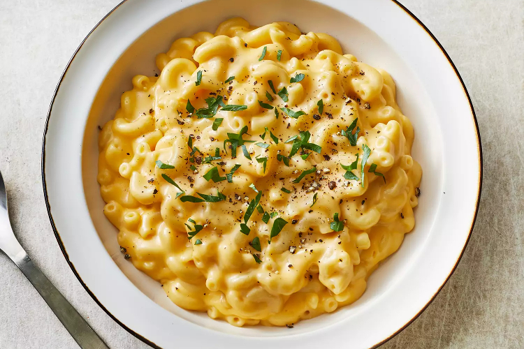

Mac and Cheese

Simple Macaroni and Cheese
Macaroni and cheese is one of the simplest comfort food recipes. This mac and cheese recipe is quick, easy and the ingredients are cheap to come by.
This recipes makes 4 servings. The prep time is 10 minutes. The cook time is 15 minutes. For a total time of 25 minutes.
Ingredients:
- 1 8 ounce box of elbow macaroni
- 1/4 cup of butter
- 1/4 cup of all-purpose flour
- 1/2 teaspoon of salt
- ground black pepper to taste
- 2 cups milk
- 2 cups shredded cheddar cheese
Steps:
- Bring a large pot of lightly salted water to a boil.
- Cook elbow macaroni stirring occasionally until cooked through but firm to the bite, about 8 minutes
- At the same time, melt butter in a saucepan over medium heat.
- Add flour, salt, and pepper and stir until smooth, about 5 minutes.
- Pour in milk slowly, while stirring continuously. Continue to cook about 5 minutes until smooth and bubbling.
- Add Cheddar cheese and stir until melted, 2 to 4 minutes.
- Drain macaroni and fold into cheese sauce until coated.
- Serve hot and enjoy!